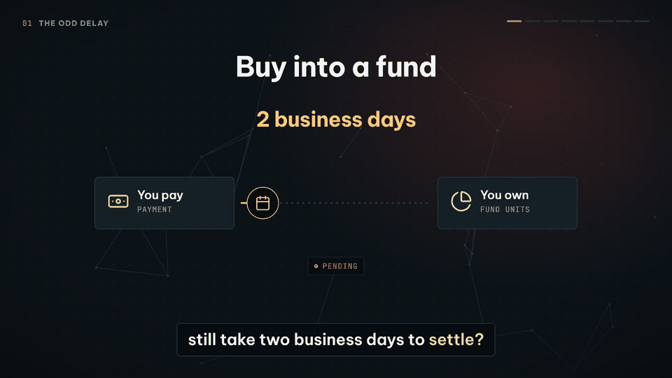
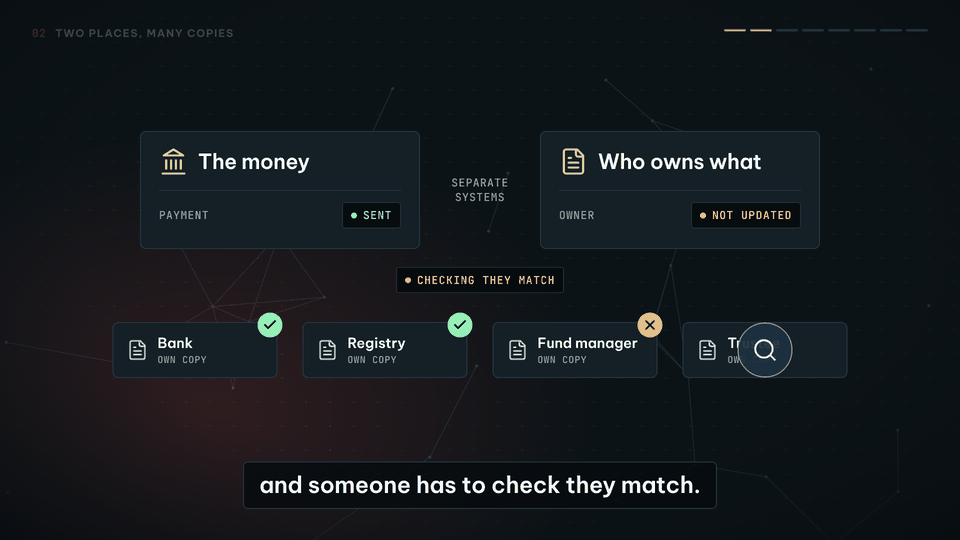
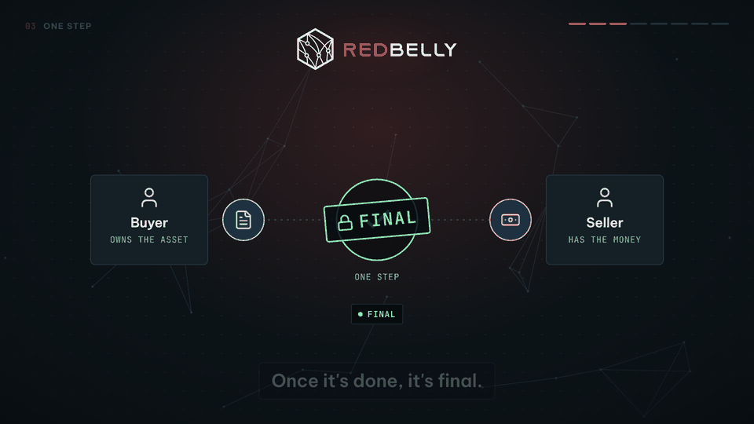
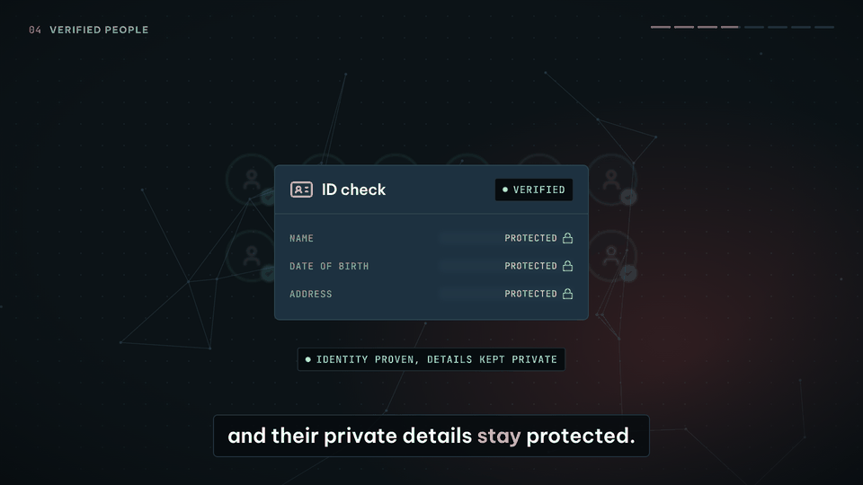
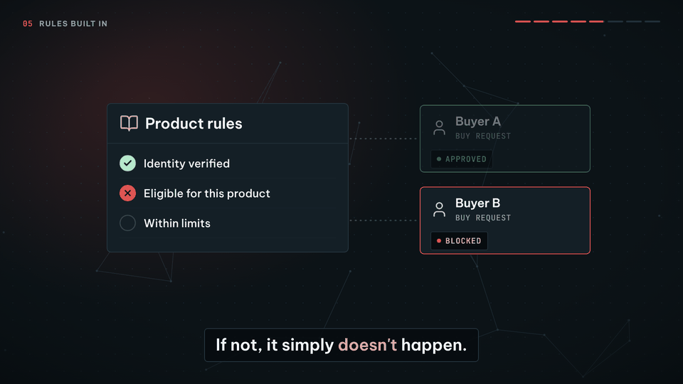
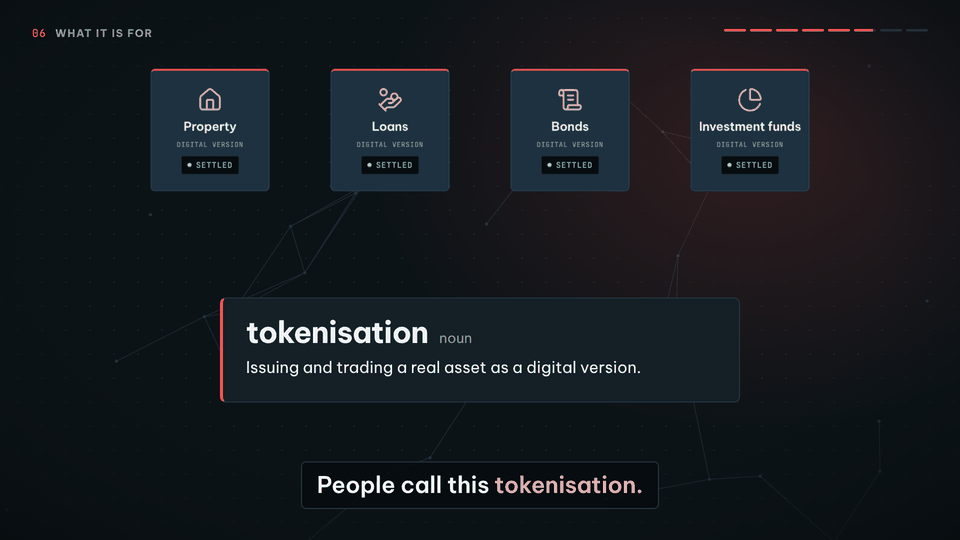
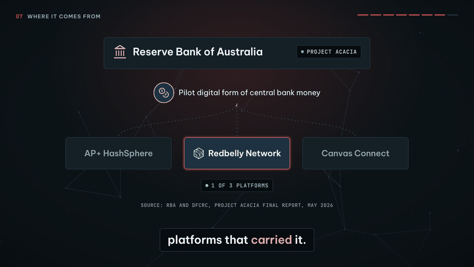
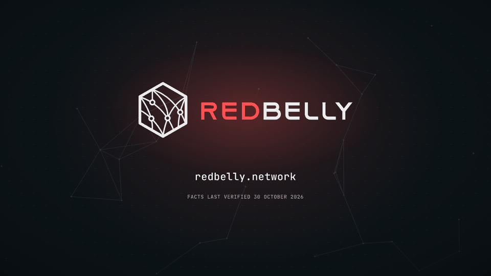

Three ideas, said in plain words
The video opens with a question anyone has felt: a photo crosses the world in a second, so why does buying into a fund still take two business days? The answer is that the money and the record of who owns what live in different places. Redbelly brings them together. The rest of the video is three ideas, and the close repeats them.
Verified people
Rules built in
Before any trade goes through, the system checks the buyer is allowed to buy that product. If not, the trade does not happen.
Every word of the narration
215 words in 21 lines. Timecodes are from the final cut. Each line links to the facts it relies on.
| Time | Narration | Facts |
|---|---|---|
| 0:00.6 | You can send a photo around the world in a second. | |
| 0:03.5 | So why can buying into a fund still take two business days to settle? | |
| 0:08.3 | Because the money sits in one place, and the record of who owns what sits in another. | |
| 0:13.3 | Different firms keep their own copies, and someone has to check they match. | |
| 0:18.1 | Redbelly is a public network, built in Australia, that brings the two together. | |
| 0:23.3 | Payment and ownership move in one step. | |
| 0:25.7 | If either side fails, nothing moves. | |
| 0:28.3 | Once it's done, it's final. | |
| 0:30.8 | And it's not a free-for-all. | |
| 0:32.4 | The people trading are verified, a bit like showing ID at a bank, and their private details stay protected. | |
| 0:39.4 | The rules are built in too. | |
| 0:41.0 | Before a trade goes through, the system checks the buyer is allowed to buy it. | |
| 0:45.4 | If not, it simply doesn't happen. | |
| 0:48.1 | So things like property, loans, bonds and investment funds can be issued and traded digitally, and settle almost instantly. | |
| 0:56.8 | People call this tokenisation. | |
| 0:59.3 | Redbelly grew out of research at the University of Sydney and CSIRO, Australia's national science agency. | |
| 1:07.9 | And when the Reserve Bank of Australia trialled a pilot digital form of its own money, in Project Acacia, Redbelly was one of three platforms that carried it. | |
| 1:18.2 | Verified people. | |
| 1:19.5 | Rules built in. | |
| 1:20.8 | Done in one step. | |
| 1:22.2 | That's Redbelly. |
Eight scenes, one idea each
Frames taken from the finished video. The burned-in captions are what a viewer sees with the sound off.

A photo crosses the world in a second. Buying into a fund sits at Pending for two business days. The gap between the two sets up the question.

The money and the record of who owns what sit in separate systems. Four firms keep their own copies and someone checks they match. One does not.

Redbelly arrives. Payment and ownership swap in a single step. When one side fails, nothing moves. When the swap completes, it is final.

A crowd turns verified one person at a time. An ID check shows that identity is proven while the personal details stay hidden.

The product's rules run before every trade. Buyer A passes all three checks. Buyer B is not eligible, so the trade is blocked.

Property, loans, bonds and investment funds become digital versions that settle almost instantly. A dictionary card names the idea: tokenisation.

Research at the University of Sydney and CSIRO leads to Redbelly. In Project Acacia, the Reserve Bank of Australia's pilot digital money ran on three platforms. Redbelly is one of them.

Verified people. Rules built in. Done in one step. Then the logo, the web address and the date the facts were last checked.
Where every fact comes from
Every statement about Redbelly is backed by Redbelly's own public material or by the Reserve Bank of Australia. Quotes are copied from the source, and an ellipsis marks words left out. Facts last verified 30 October 2026.
You can send a photo around the world in a second.
ContextEveryday comparison to set up the contrast. Not a claim about Redbelly.
Buying into a fund can still take two business days to settle.
ContextToday's typical settlement window for listed funds, as described by Tokeniser.
"Every subscription, redemption and transfer remains unsettled for two business days in listed funds, and often longer in private assets."S5 Tokeniser (a Redbelly Network project)
The money and the record of who owns what sit in different places, and the copies have to be checked against each other.
ContextHow settlement works today: cash and ownership records move separately and must be reconciled.
"Today, cash and units move separately, and records are updated days later."S5 Tokeniser (a Redbelly Network project)
"When the trade and the register update together, reconciliation is no longer required and settlement breaks are reduced."S5 Tokeniser (a Redbelly Network project)
"The intricate payment waterfalls, inter-system reconciliations, and multi-party dependencies have traditionally limited transparency and liquidity."S8 Redbelly Network blog
Redbelly is a public network.
About RedbellyDescribed as public by Tokeniser and as public in the RBA report.
"Is Redbelly a private network? No. Redbelly is a public network ..."S4 Tokeniser (a Redbelly Network project)
"Pilot use cases were conducted on a range of public and private ... platforms, including ... Redbelly Network (public) ..."S9 Reserve Bank of Australia and Digital Finance CRC, p. 12
Redbelly was built in Australia and grew out of research at the University of Sydney and CSIRO, Australia's national science agency.
About RedbellyOrigin stated by Redbelly and Tokeniser; joint venture listed in Redbelly's own timeline.
"Developed at the University of Sydney and CSIRO, Redbelly Network's homegrown ..."S3 Redbelly Network
"Redbelly was born from research at the University of Sydney and CSIRO, Australia's government science agency, with a patented consensus method built from scratch."S4 Tokeniser (a Redbelly Network project)
"CSIRO ... Australia's national science agency worked alongside that research to take it from published papers to a network that institutions can run in production, under Australian governance."S7 Tokeniser (a Redbelly Network project)
"Block8, CSIRO and University of Sydney create Redbelly Network as a joint venture with seed funding"S11 Redbelly Network
Redbelly brings the money and the ownership records together in one place.
About RedbellyRedbelly describes its design as joining payments and asset records into a single system, which reduces reconciliation.
"Its deterministic consensus unifies payments and asset ... into a single system, reducing reconciliation and enabling collateral mobility."S8 Redbelly Network blog
"Establish digital registries as a shared source of truth across issuers, managers, and investors."S1 Redbelly Network
Payment and ownership move in one step. If either side fails, nothing moves.
About RedbellyTokeniser, which runs on Redbelly, exchanges cash and units in a single step or not at all.
"On Tokeniser, cash and units are exchanged in a single step and the register updates simultaneously, or the transaction does not proceed."S5 Tokeniser (a Redbelly Network project)
"Tokeniser gives you a familiar platform. Underneath it runs Redbelly Network ..."S4 Tokeniser (a Redbelly Network project)
Once it's done, it's final.
About RedbellyDeterministic finality: a confirmed transaction cannot be reversed.
"Finality - Deterministic finality ensures transactions are confirmed once and cannot be reversed, providing certainty for financial markets"S2 Redbelly Network
"Deterministic finality settles a transaction in a single round, final the moment it completes."S4 Tokeniser (a Redbelly Network project)
The people trading are verified.
About RedbellyRedbelly describes a network of verified participants, with verifiable credentials gating every holder.
"A network of clean liquidity and verified participants enables structured products with clearly defined investor eligibility."S1 Redbelly Network
"Accountability - Verified participants enable full auditability and clear accountability across all transactions"S2 Redbelly Network
"Verifiable credentials gate every holder, enabling direct-to-investor distribution within your mandate."S4 Tokeniser (a Redbelly Network project)
Their private details stay protected.
About RedbellyIdentity is verified while privacy is protected with zero-knowledge proofs.
"Participants verify their identities, but their privacy remains protected through zero-knowledge proofs."S3 Redbelly Network
"All users are verified using digital identities and zero-knowledge proofs (ZKP), ensuring compliance without compromising personal privacy."S12 Redbelly Network blog
The rules are built in. Before a trade goes through, the system checks the buyer is allowed to buy it. If not, it doesn't happen.
About RedbellyEligibility is enforced at the point of trade; trades that fail a check do not proceed.
"A network of clean liquidity, combined with verifiable credentials enable tokenised investment products with defined investor eligibility, enforced at the point of trade."S2 Redbelly Network
"Before any trade proceeds, the investor's identity, eligibility (including wholesale or sophisticated status where required) and your limits are verified automatically. Trades that fail a check do not proceed, and every check is logged."S6 Tokeniser (a Redbelly Network project)
Things like property, loans, bonds and investment funds can be issued and traded digitally.
About RedbellyRedbelly lists these asset classes; the RBA report records funds, bonds and loan-backed securities piloted on Redbelly.
"Treasuries & Bonds, Private Credit, Carbon Credits, Derivatives & Commodities, Insurance, Real Estate"S1 Redbelly Network
"Redbelly provides the infrastructure to issue, manage, and distribute regulated digital financial assets to a global investor base."S1 Redbelly Network
"Macropod piloted two use cases. The first use case tested issuance, trading and redemption of tokenised units in a wholesale managed investment scheme ... The second use case tested a tokenised corporate bond ... used in use cases: Redbelly Network."S9 Reserve Bank of Australia and Digital Finance CRC, p. 61
"NotCentralised piloted the structuring, issuance and management of a tokenised structured finance security backed by loans ... used in use case: Redbelly Network."S9 Reserve Bank of Australia and Digital Finance CRC, p. 61
They settle almost instantly.
About RedbellySettlement is described as quasi-instant, moving from two days (T+2) to the same day (T+0).
"Settlement is quasi-instant. Deterministic consensus finalises a transaction in a single round, with finality the moment it completes."S4 Tokeniser (a Redbelly Network project)
"Move from T+2 to T+0 settlement."S5 Tokeniser (a Redbelly Network project)
People call this tokenisation: issuing and trading a real asset as a digital version.
DefinitionPlain-language definition, consistent with how Redbelly and the Acacia pilot describe a digital twin of a real asset.
"Asset issuers can issue and distribute products globally, with compliance built into the infrastructure"S2 Redbelly Network
"... the consortium is mirroring a live digital twin of the real-world asset, the Wisr Freedom Trust 2025-1 ..."S8 Redbelly Network blog
In Project Acacia, the Reserve Bank of Australia trialled a pilot digital form of its own money.
About RedbellyThe RBA and the Digital Finance CRC ran Project Acacia and issued a pilot wholesale central bank digital currency (wCBDC).
"The use cases also explored multiple methods for settling tokenised asset transactions using different forms of public and private digital money, including traditional RBA exchange settlement account (ESA) balances, a pilot wholesale central bank digital currency (wCBDC), tokenised commercial bank deposits and stablecoins."S10 Reserve Bank of Australia
"The total value of pilot wCBDC issuance over the project was $4.4 million with individual transaction values of up to $250,000 seen in use cases."S9 Reserve Bank of Australia and Digital Finance CRC, p. 13
Redbelly was one of three platforms that carried it.
About RedbellyThe RBA final report names three platforms used with pilot wCBDC: AP+ HashSphere, Canvas Connect and Redbelly Network.
"Use cases used three of the short-listed ... platforms for their experimentation with pilot wCBDC: Australian Payments Plus's (AP+) HashSphere instance ..., Canvas Connect ..., and Redbelly Network ..."S9 Reserve Bank of Australia and Digital Finance CRC, p. 13
Sources
- Redbelly Network, Home page (S1)
- Redbelly Network, Asset Tokenisation (S2)
- Redbelly Network, Project Acacia (S3)
- Tokeniser (a Redbelly Network project), Our Technology (S4)
- Tokeniser (a Redbelly Network project), Instant settlement (S5)
- Tokeniser (a Redbelly Network project), Automated compliance (S6)
- Tokeniser (a Redbelly Network project), About Us (S7)
- Redbelly Network blog, Tokenised asset-backed security transaction pilot launches under Project Acacia (11 December 2025) (S8)
- Reserve Bank of Australia and Digital Finance CRC, Project Acacia: Exploring the Role of Digital Money in Wholesale Tokenised Asset Markets, Final Report (May 2026) (S9)
- Reserve Bank of Australia, Media Release 2026-13: RBA and DFCRC Release Findings From Project Acacia (18 May 2026) (S10)
- Redbelly Network, About Us (Redbelly journey timeline) (S11)
- Redbelly Network blog, What Sets Redbelly Network Apart (30 October 2024) (S12)
The brief, point by point
85 of 85 automated checks pass. The checker lives in src/checks/verify.py and its last report is in submission/verification-report.md.
Someone with no crypto knowledge understands it after one watch
One everyday comparison opens the video: a photo arrives in a second, a fund takes two business days. Everything after that answers why. The ID-at-a-bank comparison carries the identity idea. The video uses none of the usual jargon, and the checker scans for it: no crypto, token, wallet, node or consensus.
Original, memorable and easy to share
The whole explanation lands on three short ideas that the close repeats: verified people, rules built in, done in one step. Captions are burned in for sound-off viewing on X. The music, sound and animation were all made for this entry.
Every fact about Redbelly is correct
Every statement about Redbelly maps to a fact in the fact sheet, and every fact carries a quote from Redbelly's own material or from the Reserve Bank of Australia. The checker re-fetches each source and confirms each quote is still on the page.
| Failure criterion | Status | How it is avoided |
|---|---|---|
| The banned word or a stand-in appears anywhere | Clear | Scanned in the narration, the captions, every piece of on-screen text, this site, the PDF and every file in the repository. The usual stand-ins and abbreviations are checked as well. |
| Any factual error about Redbelly | Clear | 16 facts, each tied to quotes from public Redbelly, Tokeniser and Reserve Bank of Australia material, last verified on the date below. |
| Entry posted publicly before judging | Clear | The video has not been posted on X or any other channel. The DAO posts the winner. |
| Price talk, investment advice or promises of returns | Clear | None. The script never mentions a token, a price, a yield or a return, and the checker scans for them. |
| Unlicensed music, images or footage | Clear | No stock media at all. Music and sound are synthesised in code, the animation is drawn in code, and fonts, icons and logos are used under the licences listed in CREDITS.md. |
| AI generated text submitted without checking | Clear | Every line was checked against the sources in the fact sheet. The final audio is transcribed and compared word for word with the script, so the voice cannot add or change a word. |
| Personal credit inside the deliverable | Clear | No names, handles, signatures, watermarks or made-by lines in the video, the captions, the site or the PDF. |
How it was made
Everything is built from source in this repository, so every frame and every sound can be rebuilt and inspected. Licences for the fonts, icons and logos are in CREDITS.md.
| Script | 21 lines in src/script.json, each tagged with the facts it relies on. Written to be read aloud: one idea per sentence. |
| Voice | Kokoro 82M v1.0, an open-weights voice model under the Apache 2.0 licence, with its voice Bella (af_bella), chosen from 20 voices in a side by side listening test. Each line is generated at three speeds, each take is transcribed with Whisper, and only takes that match the script word for word can be chosen. The voice runs at its natural pace, with no time stretch. |
| Music and sound | Composed in code in src/audio/music.py: warm pads, a plucked arpeggio, bass and light percussion at 96 BPM. The groove lands on the Redbelly reveal. Sound effects are synthesised the same way. The music ducks under the voice and the mix is mastered to -14 LUFS. |
| Picture | Eight HTML and SVG scenes in the DAO Task Board palette and type. Each frame is a pure function of time, rendered in Chromium at 1920 x 1080 and 60 frames per second, then encoded with x264. |
| Timing | Every animation and sound effect is anchored to a spoken word, using Whisper word timings, so the picture moves when the voice says the word. |
bash src/build.sh # timeline, music, mix, picture, encode, captions, site, PDF, checks python src/checks/verify.py --online --asr # re-check sources and the spoken words
Deliverables
| redbelly-in-simple-terms.mp4 | The entry. 1920 x 1080, H.264 and AAC, captions burned in |
| redbelly-in-simple-terms.srt | Captions as a separate file (SubRip) |
| redbelly-in-simple-terms.vtt | Captions as a separate file (WebVTT) |
| redbelly-in-simple-terms-submission.pdf | Submission document: script, storyboard, facts, sources and checks |
| sources.md | The source list with every quote |
| transcript.txt | The narration as plain text |
| verification-report.md | Output of the automated checks |